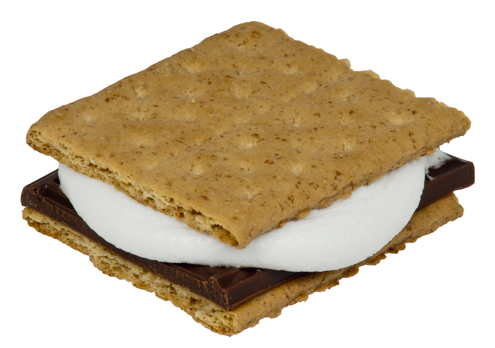

S'mores

Who doesn't like S'mores?
Ingredients
- Graham cracker
- Chocolate bar
- Marshmallow
Steps
-
Heat a grill to medium-low heat, or use an open fire if available.
-
Halve graham cracker and sandwich a portion of chocolate bar between two
squares.
-
Skewer marshmallow and hold over heat for 1-2 minutes or until golden
brown.
-
Using the top square of graham cracker, place marshmallow on chocolate
and press the marshmallow down with cracker. Pull skewer out.